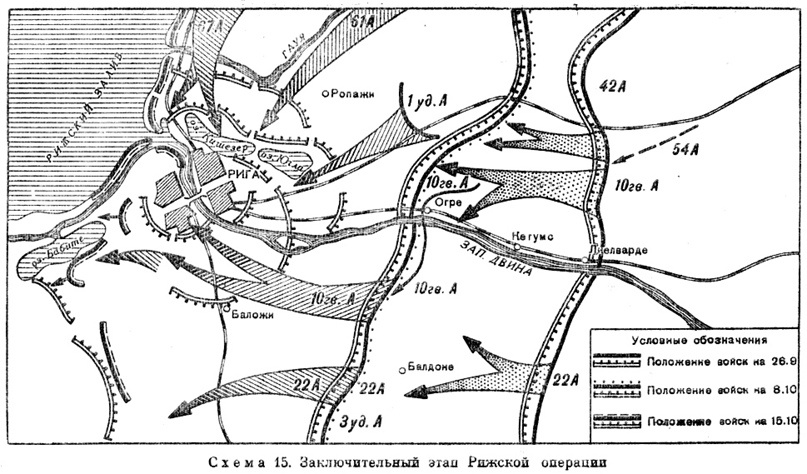
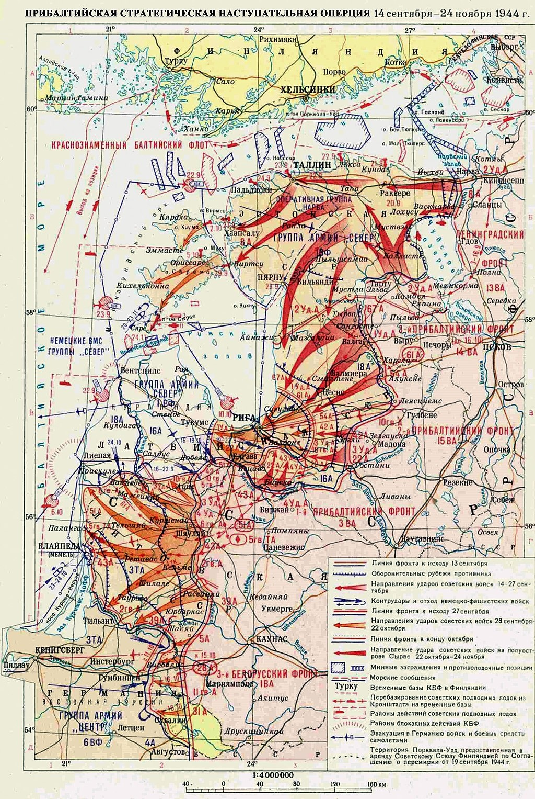

Первое. Войска 3-го Прибалтийского фронта в 10.00 14.9.44 г., после 60-минутной артподготовки и массированного бомбо-штурмового удара авиации, перешли в наступление:
67 А и 1 УА с участка (иск.) выс. 60,0 Вярати, в направлении Руена; 54 А с участка Яунамуйжа, Силамелли в направлении Смилтене, форсировав реку Вяйке-Эма-Йыги и прорвав передний край, войска 67-й и 54-й армий к исходу дня продвинулись от 3 до 5 км в глубину обороны противника. 1 УА, форсировав р. Вяйке-Эма-Йыги, имела незначительное продвижение на западном берегу реки и со второй половины дня вела бой перед позициями противника по восточным скатам высот южнее м. Соэ, Иваски, мз. Сору.
В ходе боев 14.9.44 г., по неполным подсчетам, наступающими частями уничтожено до 1500 солдат и офицеров противника, 24 орудия, 24 миномета, 29 пулеметов и подбито пять самоходных орудий, взято 185 пленных.
Противник в полосе наступления наших войск частями 12 апд, 61, 30, 21, 277 пд и 21 апд оказывал упорное огневое сопротивление и в полосах наступления 67-й и 54-й армий переходил в неоднократные контратаки, силой ротабатальон с тремя—пятью танками и самоходными орудиями. Направление Руена противник усилил отдельным штурмовым полком «Мон», переброшенным из района Тарту в ночь на 14.9.44 г. 51,2, воет, берег Безым. ручья до Вол. прав., Йыгевесте, Ярве, мз. Рообе, (иск.) Колга, Михкли, Тыну, Капрани, Курели.
1 УА в 10.00, после часовой арт. подготовки, при поддержке авиации форсировала р. Вяйке-Эма-Йыги на участке Хуммули, мз. Сору и в результате упорного боя на ряде участков частями 14 и 12 гв. ск вклинилась в оборону противника на западном берегу реки от 1 до 2 км, овладев Хуммули, Азу, Сока, Мазика, Реку. За день боя отражено пять контратак, силой рота-батальон каждая, с четырьмя—шестью самоходными орудиями.
54 А в 10.00 частями 7 ск, после часовой арт. подготовки, форсировав р. Гауя, прорвала передний край обороны противника и, расширив прорыв в глубину от 3 до 5 км, к исходу дня вышла на рубеж Милны, Рукмани, Гравьи, Ругуми, развилка дорог (500 метров южнее Ругуми), (иск.) Аугстэжас, Вол. прав. В течение дня частями армии отражены контратаки до роты в направления Яуншоды и до батальона из района зап. Ругуми. Контратаки противник поддерживал группами 3—5 танков и самоходных орудий.
Третье. 14 ВА, содействуя наступлению войск фронта, в течение дня мощными
ударами штурмовой и бомбардировочной авиации уничтожала живую силу, огневые
средства и технику противника. Истребители прикрывали войска на поле боя и
действия боевой авиации. В результате боевых действий подавлен огонь и уничтожены
25 минометных и свыше 40 арт. батарей; разбито 50 автомашин и 3 тягача; взорваны
четыре склада с боеприпасами, уничтожено до 400 солдат и офицеров противника.
В воздушных боях сбито пять самолетов ФВ-190. Произведено 902 самолето -вылета,
из них 472 на бомбардировочно-штурмовые действия. Потери: с боевого задания на
свои аэродромы не вернулись три бомбардировщика и семь истребителей.
Авиация противника группами 6—10 самолетов ФВ-190 и Ю-87, под прикрытием
истребителей, бомбардировала боевые порядки наступающих войск 67 А и 1 УА;
одиночными самолетами вела разведку в полосе фронта. За сутки зарегистрировано 12
случаев бомбардировок.
1 УА в 10.00, после часовой арт. подготовки, при поддержке авиации форсировала р. Вяйке-Эма-Йыги на участке Хуммули, мз. Сору и в результате упорного боя на ряде участков частями 14 и 12 гв. ск вклинилась в оборону противника на западном берегу реки от 1 до 2 км, овладев Хуммули, Азу, Сока, Мазика, Реку. За день боя отражено пять контратак, силой рота-батальон каждая, с четырьмя—шестью самоходными орудиями.
54 А в 10.00 частями 7 ск, после часовой арт. подготовки, форсировав р. Гауя, прорвала передний край обороны противника и, расширив прорыв в глубину от 3 до 5 км, к исходу дня вышла на рубеж Милны, Рукмани, Гравьи, Ругуми, развилка дорог (500 метров южнее Ругуми), (иск.) Аугстэжас, Вол. прав. В течение дня частями армии отражены контратаки до роты в направления Яуншоды и до батальона из района зап. Ругуми. Контратаки противник поддерживал группами 3—5 танков и самоходных орудий.
Третье. 14 ВА, содействуя наступлению войск фронта, в течение дня мощными ударами штурмовой и бомбардировочной авиации уничтожала живую силу, огневые средства и технику противника. Истребители прикрывали войска на поле боя и действия боевой авиации. В результате боевых действий подавлен огонь и уничтожены 25 минометных и свыше 40 арт. батарей; разбито 50 автомашин и 3 тягача; взорваны четыре склада с боеприпасами, уничтожено до 400 солдат и офицеров противника.
В воздушных боях сбито пять самолетов ФВ-190. Произведено 902 самолето-вылета, из них 472 на бомбардировочно-штурмовые действия. Потери: с боевого задания на свои аэродромы не вернулись три бомбардировщика и семь истребителей.
Авиация противника группами 6—10 самолетов ФВ-190 и Ю-87, под прикрытием истребителей, бомбардировала боевые порядки наступающих войск 67 А и 1 УА; одиночными самолетами вела разведку в полосе фронта. За сутки зарегистрировано 12 случаев бомбардировок.
В период 22.30 — 23.00 13.9.44 г. группа 6 самолетов ДО-215 бомбила район Выру. Имеются жертвы — 2 убитых и 7 раненых.Войска армии ведут бои по разгрому немецких захватчиков в Прибалтике 5 дней и за эти 5 дней, войсками армии, поставленная боевая задача — выход на реку Западная Двина и захват гор. Рига — не выполнена. Если в первый день боя (14.9.44 г.) было образцово проведено форсирование реки и прорыв укрепленной полосы обороны врага, исключительно хорошее взаимодействие родов войск (пехоты, артиллерии, танков, авиации), имели хороший темп наступления, то в последующие дни эти положительные факты были утрачены. И что особенно характерно, в последующие дни каждодневно снижался темп наступления и систематически войсками боевая задача не выполнялась; недостатки в организации боя, управлении, взаимодействии всех родов войск не уменьшались, а увеличивались.
Кроме всего этого, большими недостатками в прошедших наступательных боях явились — отсутствие наблюдения и разведки; НП командиров дивизий и корпусов, как правило, не являются наблюдательными пунктами потому, что с них они не видят поля боя, а поэтому и не руководят войсками и только поэтому, зачастую, не знают действительной обстановки; штабы дивизий, корпусов находятся так далеко (10—15 км), что не могут управлять своими войсками, многие штабы артдивизий, минбригад находятся от своих частей за 15—20 км; артиллерийские позиции находятся далеко. ЦАМО. Ф. 398. Оп. 9308. Д. 630. Л. 311-315
22 сентября 1944 г. 16 ч 00 минПервое. Войска 43-й армии, преодолевая упорное сопротивлениепротивника овладели крупным опорным пунктом немцев — Балдоне и к 15.00 частями 1 ск овладели:Сподрини, (иск.) Межапераини, отм. 35,8, (иск.) Шепери, Балдоне, Путали, Вилейни, Дзерши, (иск.) Галднеки.
19 ск правым флангом, сломив сопротивление противника, овладел Галднеки, Циртас, (иск.) Лидакас, Веценэс, центром и левым флангом ведет ожесточенные бои с упорно сопротивляющимся противником и отбивает контратаки противника в р-не Кажоки и Яункажоки.
Второе: Противник огневыми налетами артиллерии и минометов, огнем танков и самоходных орудий обстреливает боевые порядки наших войск.Первое: Рижская группировка противника, действующая севернее р. Зап. Двина, в ожесточенных боях отбрасывается нашими войсками на запад. Противник, цепляясь за каждый тактически выгодный рубеж, пытается сдержать наше наступление на Рига с целью вывести основную группировку своих войск в Восточную Пруссию.
Второе: Войскам 10 гв. А и 42 А продолжать стремительное наступление в западном направлении, разрезая отходящие войска противника и уничтожая их по частям, 26.9.44 г. главными силами овладеть рубежом: Малпил, Сунтажи, Рембата и в дальнейшем наступать на Рига. Войска 3 уд. А и 22 А перевести южнее р. Зап. Двина и к 3.10.44 г. сменить на участке Яунелгава, Текава, Елгава, Добеле, Ауце войска Первого Прибалтийского фронта.
Третье: 5 тк, не ввязываясь в бой за опорные пункты противника, обходя их, стремительно развивать наступление в общем направлении Ватране, Кангара, Рига, захватить город Рига и удерживать его до подхода главных сил фронта.
ЦАМО. Ф. 132-А. Оп. 2642. Д. 37. Л. 58, 59Первое: Войска фронта 25.9.44 г. продолжали наступление и, преодолевая сильное
огневое сопротивление противника и отражая его контратаки силою рота-батальон
пехоты со штурмовыми орудиями, продвинулись в западном направлении от 9 до 15
км, овладели городами Мадлиена, Скривери, освободили более 100 населенных
пунктов, в том числе крупные населенные пункты: Берзмуйжа, Лиелюмправас и ж. д.
станция Кейпене, Скривери; к исходу дня ведут бой на рубуже:
А. 10 гв. А — (иск.) Скуене, воет, берег р. Амата, (иск.) Кавейэс, Пипари, Аннас,
Тевьи, 1 км севернее Рагайни, (иск.) Струмти, Силайзены, (иск.) Яунпилс, Пивас,
Берзмуйжа.
Второе: Таким образом, войска фронта выполнили задачу, поставленную директивами № 220189 от 29.8.44 г.1 и № 204699 от 509.44. г.2, прорвали ильно укрепленный рубеж обороны противника, проходящий по озерам Инэсис, Юмурда, Пулгосна и далее Озолмуйжа, Сауснэя, Плявинас с глубоко эшелонированной оборонительной системой, и за 12 дней наступления с ожесточенными боями продвинулись от 40 до 90 км в глубину, расширили прорыв до 80 км по фронту и вышли на рубеж: (иск.) Нитауре, Мадлиена, Скривери и завершили первый этап Рижской операции.
За 12 дней операции войсками фронта разгромлены 329, 132, 33, 121 пд и нанесены большие потери 126, 122, 24, 389 пд, 19 лат. дивизии СС.
1. 51-я армия в 01.00 28.9.44 г. закончила перегруппировку войск и полностью сменила соединения 6-й гв. армии и правофланговые соединения 2-й гв. армии. Соединения 10 ск, 1 гв. ск и 60 ск приступили к подготовке и проведению мероприятий по директиве Штафронта от 27.9.44 г. № 0084/оп1. Полковая артиллерия и 3 сб 706 сп 204 сд в 7.30 28.9.44 г. успешно отразили попытку противника силою рота пехоты и 4 танка, пытавшиеся вести разведку боем нашей обороны в направлении Адамамуйжа. В результате боя уничтожено 40 солдат и офицеров, сожжено 3 танка и подбит один.
Положение войск армии на 22.00 28.9.1944 года.60 ск — 417 сд в 24.00 27.8.44 г. сменила части 67 и 51 гв. сд и заняла оборону на рубеже: 1369 сп — 300 м зап. Завзайши, 300 м зап. Поуули, зап. скаты выс. 82,6, воет. окр. Поруни, 200 м зап. Уксури, 600 м воет. Бежас; 1376 сп — 400 м воет. Пельди, Чурейкас, Целмини, Юнтэли, опушка рощи сев.-вост. 450 м Качускас; 1372 сп — зап. опушка леса южнее Ретас, Розенбальди, зап. опушка леса южнее Розенбальди, Межмали, Анас, Глазники, 300 м южнее Силькас.
КП штадив 417 — Букайшу (3 км сев.-зап. Жагаре).77 сд — в 01.00 закончила смену частей 51 гв. сд и 154 сд и заняла оборону на рубеже: 324 сп — Лулайци, 1 км юго-вост. Нарбуци; 105 сп — 1 км юго-вост. Нарбуци, Саунорай 1-е; 276 сп — в 6.00 28.9.44 г. сосредоточен в лесу 9 км юго-зап. Жагаре.
КП штадива — Гирконцы 9 км сев.-вост. Круопяй.2. Противник, за исключением попытки вести разведку боем в 7.30 28.9.44 г. в
направлении Адамамуйжа в остальное время суток активности живой силой не
проявлял, короткими огневыми налетами артиллерии и минометов обстреливал боевые
порядки войск. С наступлением темноты 28.9.44 г. противник усилил активность артиллерии на центральном участке фронта, за сутки
выпущено 1800 снарядов и мин.
Авиация противника одиночными самолетами вела разведку в полосе армии, отмечено
25 самолето-пролетов.
Зап. Адамамуйжа изъяты личные документы у убитых, принадлежавших мотополку
неустановленной нумерации тд «Великая Германия».
3. За сутки противнику нанесены потери: убито и ранено 130 солдат
и офицеров, 5 станковых и 6 ручных пулеметов, сожжено 3 танка и
подбит 1.
Потери наших войск за 27.9.44 г.: убито — 28, ранено — 98 чел.
ЦАМО. Ф.407. Оп.9837. Д.536. Л.131,132
1. Противник частями 551 пд (1113, 1115, 1114 пп) и 611-м охр. Полком
обороняется на рубеже: Шиленай 1-й, Покуршенай, Альбикишки, Кужи, Тирелки,
Окавцвили, Поширвис, оз. Бията.
На переднем крае имеются окопы полного профиля, местами не сплошные траншеи,
соединенные ходами сообщения. Перед передним краем в р-нах: Покуршенай,
Альбикишки, Кужи, Смильтыне, Косцюки, оз. Янулайци, лес Пагелуве установлены
минные поля.
Второй оборонительный рубеж подготовлен по левому берегу р. Вента. Основная
группировка артиллерии выявлена в р-нах: м. Куршенай; Катылишки; Омолье;
Жиндули; Буляны (20—25 арт. батарей).
Танки и самоходные установки отмечены в р-нах: Кальнелис; Косцюки;
Блуси (20—25 единиц).
ЦАМО. Ф.48-А. Оп.1795. Д.14. Л.365
1. Ознакомившись на месте с обстановкой во 2-м и 3-м Прибалтийских
фронтах, я пришел к следующим выводам:
Противник занимает заблаговременно подготовленную полосу обороны, которая, судя
по имеющимся данным, глубоко развита и эшелонирована. Плотность размещения
войск противника в обороне: 4—6 км на пехотную дивизию. Дивизии противника
понесли значительные потери в личном составе, но огневые средства (артиллерию и
минометы) имеют почти полностью.
Вывод: противник стремится жесткой обороной сдержать наступление наших войск с
целью:
а) выиграть время для более длительного сковывания наших войск на рижском
направлении и перегруппировки своих войск для обороны Восточной Пруссии;
б) удерживать рижский плацдарм как ближайший подступ к самой Германии.
2. Причины неуспешных действий войск 2-го и 3-го Прибалтийских фронтов по
прорыву оборонительной полосы внешнего обвода рижского плацдарма заключаются в
следующем: ударные армии обоих фронтов вышли и начали прорыв в группировке, не
соответсвующей обстановке, так:
а) ударные группировки 3-го Прибалтийского фронта были разделены на два
направления: северное — на внутренних флангах 67-й армии и 1-й уд. армии; и южное
— вдоль Рижского шоссе. Эти два направления прорыва производились на узких
фронтах, разомкнутых к тому же значительным пространством, вследствие этого
противник, сконцентрировав огонь на узком фронте, приостановил наступление наших
войск.
б) 61-я армия развернула наступление на узком участке фронта (вдоль шоссе),
вследствие этого основные сили армии оказались полностью неиспользованными.
в) 10-я гв. армия, представляющая основную ударную силу во 2-м Прибалтийском
фронте, оказалась нацеленной на тактически невыгодном направлении — лесисто-
болотистое пространство. В плохой организации боя и, главным образом,
артиллерийского огня, в результате артиллерийско-пулеметный огонь противника не
был подавлен ни на одном направлении прорыва.
ЦАМО. Ф.217. Оп.1221. Д.3981. Л. 2-4
Первое: Войска 3-го Прибалтийского фронта в течение ночи на 6.10.44 г., в
результате действий разведки, установили отход противника с занимаемого рубежа
обороны и с 6.00 6.10 перешли в решительное преследование. Сбивая части прикрытия противника с промежуточных рубежей, преодолевая его огневое
сопротивление и инженерные заграждения на путях отхода, войска фронта в первой
половине дня стремительно преследовали противника и, продвинувшись до 14 км, во
второй половине дня вышли ко второму рубежу обороны, где и завязали упорные бои с
противником, пытающимся задержать продвижение на этом рубеже.
Противник с утра 6.10 на участке к югу от р. Гауя начал отход в зап. направлении.
Прикрываясь сильными арьергардами, состоящими из пехоты, минометных,
артиллерийских частей, а на главных направлениях самоходными орудиями, в течение
первой половины дня под ударами наших войск отходил в зап. направлении. При
отходе противник взрывает мосты, минирует обходы на дорогах, лесные дороги
преграждает завалами и, с промежуточных рубежей, огнем частей прикрытия
стремится задержать продвижение наших войск. Во второй половине дня на рубеже 2
км воет. Сигулда, Битаны, зап. мз Малпил, Сидгундас организованным огнем и на
отдельных участках контратаками силой до роты пехоты стремится задержать
продвижение наших войск в зап. направлении.
Второе: 67 А на правом крыле и в центре, оставаясь на достигнутых рубежах, вела
боевую разведку. На левом крыле армии, установив разведкой отход противника,
частями 119 ск перешла в наступление. Преодолевая упорное огневое сопротивление и
инженерные заграждения противника, части 119 ск к исходу дня вели бой на рубеже
Яунмуйжниекс, выс. 90,9, Роцис, отд. дома на шоссе (1 км сев. мз. Турайда), сев. отм.
13,4.
61 А в течение ночи вела усиленную разведку и наблюдение за действиями противника
и с утра 6.10, установив его отход, перешла в преследование. Сбивая арьергарды
противника, преодолевая его инженерные заграждения и, с 14.30 до 15.40 отразив
четыре кантратаки силою до роты каждая из района Вол. Прав (2 км воет. Сигулда), к
исходу дня вышла и вела бой на рубеже 1 км юго-зап. Муцениекс, Пелтэс, Дзелзмачас,
Узбазас, Тизули, Яунбуняс, 1 км зап. Аниши.
54 А, установив отход противника, в 6.30 6.10.44 г. перешла в преследование.
Сбивая арьергардные части противника и преодолевая его инженерные заграждения, в
течение дня продвинувшись до 14 км, к исходу дня вела бой на рубеже воет.
Вяцжибуты, мз. Малпил, 500 м воет. Друвели, отд. роща у шоссе зап. Каркли, узел
дорог с отм. 70,8, Крейчи, Калнакрейчи. Разведотрядом вела бой за Вяцклаугас.
1 УА, сдав свою полосу частям 67 А, с 17.00 на марше в новый район
сосредоточения.
10 тк с 14.00 6.10.44 г. на марше в районе мз. Малпил, Вадзелес, Слисери, в готовности
действовать в направлении Ропажи; на 18.30 головными бригадами был на рубеже
Калнциемс, Салмини.
Третье: 14 ВА ночными бомбардировщиками и днем штурмовиками подавляла
артогонь противника перед фронтом наших преследующих войск и уничтожала
отходящие войска противника на дорогах к западу и юго-западу от Сигулда.
Истребители прикрывали действия штурмовиков и вели борьбу с истребителями
противника.
В результате боевых действий взорван склад с боеприпасами и разбито 15 автомашин
противника. В воздушных боях сбито 2 самолета ФВ-190.
Произведено 89 самолето-вылетов, из них 32 на бомбардировочно-штурмовые
действия.
Потери: с боевого задания не вернулся один наш истребитель.
Авиация противника одиночными и парами самолетов вела разведку наших
боевых порядков и армейских тылов. В полосе фронта отмечено 14 самолето
-пролетов.
ЦАМО. Ф.242. Оп. 2254. Д.75. Л.41-43
Первое. Войска 3-го Прибалтийского фронта в течение ночи на 7.10, сломив
сопротивление противника на его промежуточном рубеже, частями 82 сд овладели
городом Сигулда и с утра 7.10 перешли в общее преследование противника. Сбивая
арьергарды противника, преодолевая инженерные заграждения и огневое
сопротивление, войска фронта продвинулись в течение дня до 12 км и в ряде пунктов
вышли ко второму промежуточному рубежу обороны противника.
87, 563 пд, 12 апд, 21 апд, 19 лат. пд СС, 126, 122 и 31 пд противника, прикрываясь
арьергардами, состоящими из пехоты, минометных и артиллерийских
частей, а на главных направлениях с самоходными орудиями, в течение дня под
ударами наших частей отходили в западном и юго-западном направлениях. При отходе
противник продолжает взрывать мосты, минировать обходы на дорогах и преграждать
лесные дороги завалами; огнем арьергардов и на отдельных участках конратаками, в
районах переправ, на перекрестках дорог, в населенных пунктах и в дефиле оказывал
сопротивление наступлению наших войск.
Второе. 67 А, установив в результате действий разведки отход противника,
с 5.00 перешла в преследование. Преодолевая сопротивление авангардов противника и
его инженерные заграждения, продвинувшись на глубину до 10 км, к исходу дня вела
бой на рубеже Петэрупе, Озолыни, 1 км юго-зап. Леяс-Муижниеки, 500 метров сев.-
воет. Дурей, отдельные дома (700 метров воет. Саудас), отдельные дома (1 км сев.-
воет. мз. Сея), лес (700 метров сев. Зиемелис), Пауска, узел шоссейных дорог юго-зап.
аптека Энгларте, 500 метров сев.-воет. мз. Энгларте, Купчас.
61 А в течение ночи на 7.10, сломив сопротивление противника на промежуточном
рубеже обороны, частями 82 сд ночным штурмов овладела городом Сигулда и,
преследуя отходящего противника в западном и юго-западном направлениях, в течение
дня продвинулась от 9 до 12 км и к исходу дня вела бой на рубеже: по восточному
берегу безым. ручья у Рампа, 500 метров воет. Бираниеки, Криевупе, Лесник Розитэс1,
500 метров сев.-воет, и юго-вост. Отм. 67.0, зап. опушка (500 метров сев. Лаймиеки).
54 А частью сил в течение ночи на 7.10 прорвала промежуточный оборонительный
рубеж противника по р. Судэ и, развивая наступление, продвинувшись в течение дня
до 10 км, к исходу дня вышла и вела бой на рубеже Ауппцемс, Яунстипнеки, 500
метров вое. ж. д. ст. Аугшцемс, 200 метров воет. Межмуйжа, воет. Гротес.
1 У А в течение дня продолжала выдвижение в новый район сосредоточения.
10 тк в течение дня вел наступательные бои в боевых порядках 54 А. К исходу дня
главными силами находился в районе Скуйнеки, Пурмали, Целмини; 183 тбр на марше
к рубежу развертывания, на 19.00 головой колонны достигла Яунзери.
Третье. 14 ВА в ночь на 17.10 одиночными ночными самолетами бомбила войска
противника; в первой половине дня, вследствие неблагоприятных метеоусловий,
ограничила свои действия разведвылетами и, установив отход противника в западном
и юго-западном направлениях, со второй половины дня штурмовала его колонны на
рижском шоссе, на дороге мз. Аланупе—Рига, Сунтажи—Рига.
В результате боевых действий разбито 25 автомашин и 10 повозок с грузами
и пехотой, подавлен огонь и частично уничтожено 12 орудий и 6 минометов.
В воздушных боях сбито два самолета ФВ-190. Произведено 172 самолето-вылета, из
них 83 ночных бомбардировщиков и во второй половине дня 48 штурмовиков.
Потери — на свои аэродромы не вернулись один штурмовик и три истребителя.
Авиация противника одиночными самолетами вела разведку наших боевых порядков и
тыловых коммуникаций, достигая меридиана Валмиера. За сутки в полосе фронта
отмечено 15 самолето-пролетов.
ЦАМО. Ф.242. Оп.2254. Д.75. Л.51-53
Первое. Войска 3-го Прибалтийского фронта 15.10.44 г. сев. и южн. города Рига
форсировали главными силами р. Зап. Двина, в течение дня, развивая наступление
вдоль побережья Рижского залива и продвинувшись до 20 км, овладели Даугавгрива,
Болдэрая, Анныньмуйжа, Шампетерс, Петринциемс, Золитуда, Буллюциэмс,
Приедайне, Булли, Булдури, Эдинбург, Майори. Противник, оказывая огневое
сопротивление нашим наступающим частям, главным образом в узлах дорог,
населенных пунктах и выгодных для обороны естественных рубежах, под ударами
наших войск отходил в западном направлении. При отходе противник взрывает мосты,
минирует дороги, устраивает завалы и рвы, стремясь задержать продвижение наших
войск.
Второе. 67 А, расширяя плацдармы на зап. берегу р. Зап. Двина, в течение ночи
переправила главные силы на ее зап. берег и с 3.00 перешла в наступление вдоль
побережья Рижского залива. Преодолевая огневое сопротивление, заграждения и
продвинувшись вперед до 20 км, овладела крупными населенными пунктами
Даугавгрива, Болдэрая, Анныньмуйжа, Шампетерс, Петринциемс, Золитуда,
Буллюциэмс, Приедайне, Булли, Булдури, Эдинбург, Майори. К исходу дня
продолжала вести бой на рубеже зап. окр. Майори, воет. ст. Дубулты, 500 м воет.
Варкалькрогс.
1 УА, закончив переправу войск через р. Зап. Двина в районах Беллес, Мазюмправа, с
11.00 совершала марш для выхода в свою полосу и смены частей 10 гв. А 2-го
Прибалтийского фронта; к 19.00, выйдя за линию частей 10 гв. А, передовыми частями
достигла Душели, плмз. Ценас.
61 А в прежнем районе сосредоточения, в ночь на 16.10.44 г. выступает на марш в
новый район сосредоточения.
14 гв. ск 15.10.44 г. по акту передан командующему 2-го Прибалтийского фронта.
Третье. 14 ВА ночными бомбардировщиками и днем штурмовиками уничтожала
войска противника на дорогах, подавляла его артиллерию на ОП и бомбила ж. д.
станцию Слока. В результате боевых действий разбито 5 ж. д. вагонов и поврежден
путь на ж. д. ст. Слока, сожжено 16 автомашин и 12 повозок с грузами и частично с
пехотой.
Произведено 128 самолето-вылетов, из них 65 на бомбардировочно-штурмовые
действия.
Потери — с боевого задания на свой аэродром не вернулся один штурмовик.
Авиация противника одиночными самолетами вела разведку войск и тыловых
коммуникаций фронта. За сутки в полосе фронта отмечено 10 самолетопролетов.
ЦАМО. Ф.242. Оп.2254. Д.75. Л. 144-145
[3, стр. 10-33]
